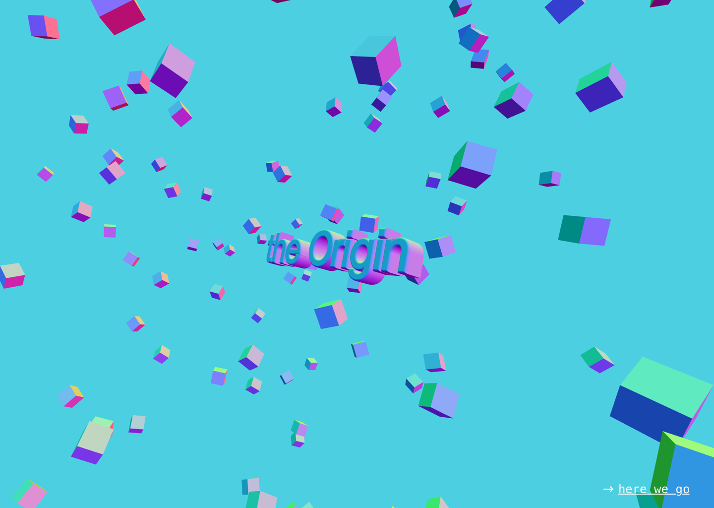
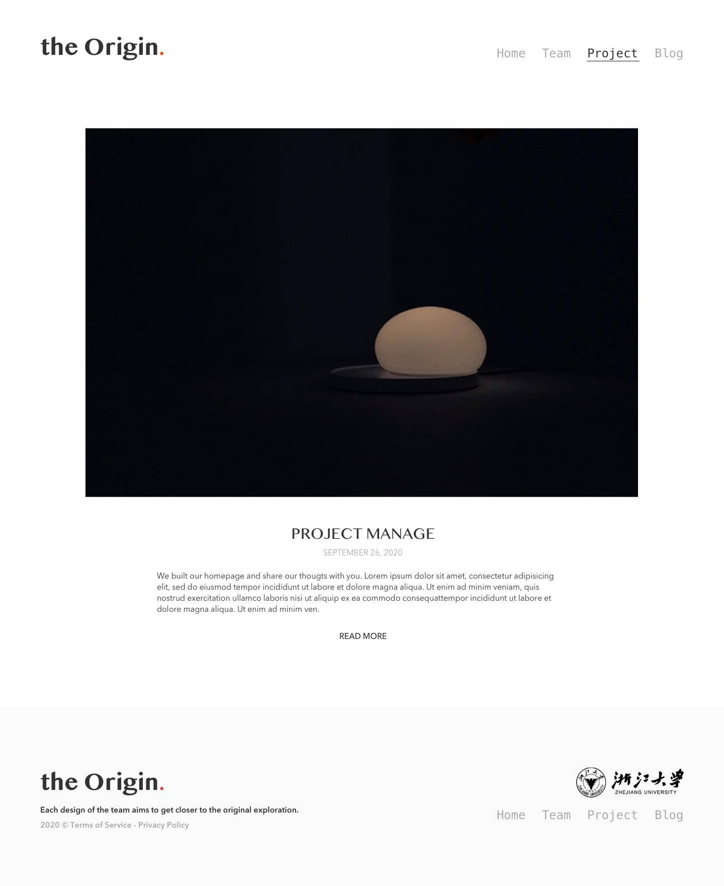
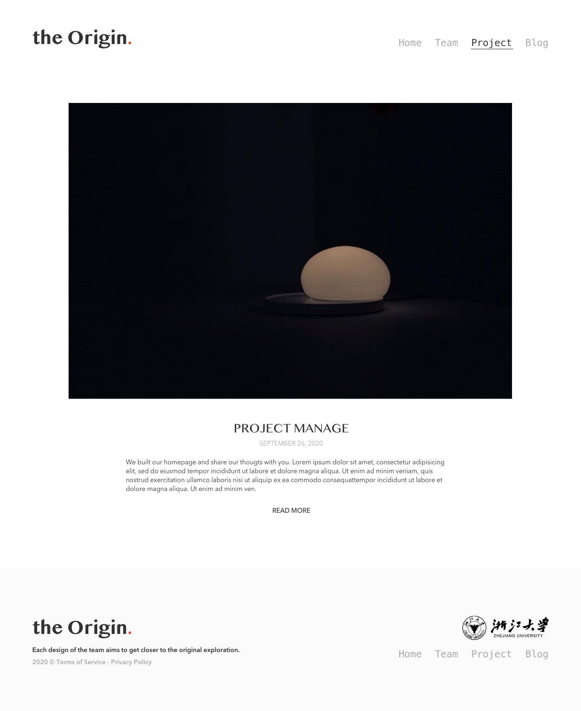
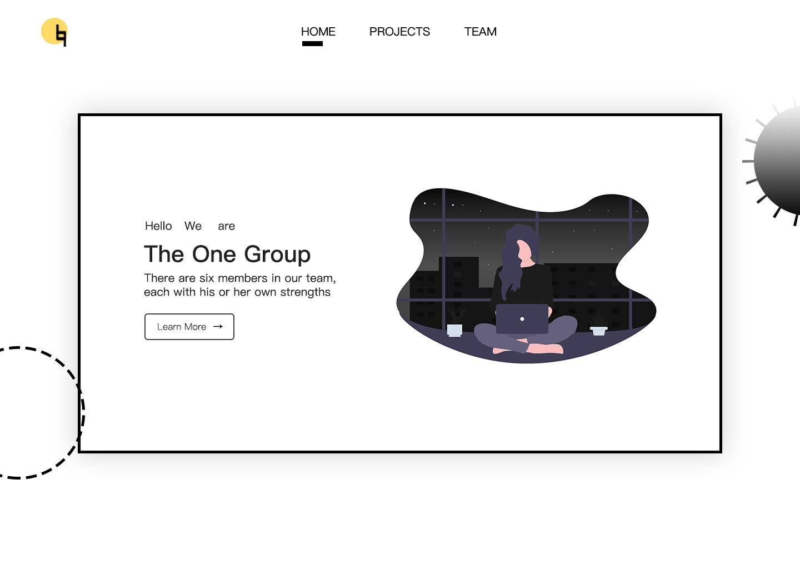
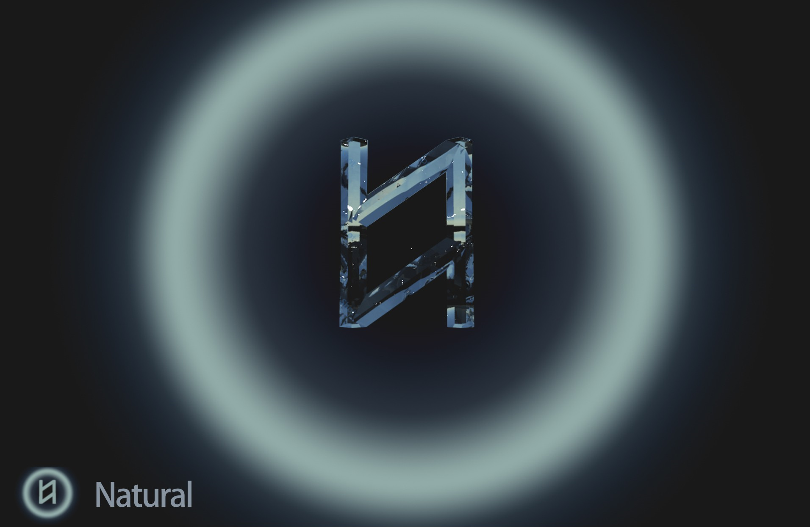

On the evening of October 3, 2020, children Zhang Chao, Weilin, Qiaoqiao and Mingyue continued their face-to-face communication in dormitory 806, while Zhang You and Dashuang, who returned during the double holidays, were on time with their online access via WeChat video, and the group discussion went smoothly.

The theme of the group meeting was to present the project as a group, to determine and unify the visual style of the website, and to divide up the tasks for the next step.
Firstly, the programme presented by the Zhang Chao and Weilin.

 


Zhang You and the Daishang:



Qiaoqiao and Mingyue:

We collect the homepage kinetic cases together, and want to use the kinetic interaction to make the webpage more impressive. In the end, we chose the particle transformation kinetics, and used the web design of Zhang Chao and Weilin's group as the architecture to further fine-tune and gradually add corresponding information.

After the division of work, the group discussion came to a successful conclusion and we took our usual group photo. Then the children left behind during the double holiday went to the class president's dormitory to kill the werewolf with their stools!
Attachment: Zhang Chao Structural framework / full participation Building the website, adding information / Zhang You Home page interaction / Dashuang, Mingyue Logo effect, copywriting